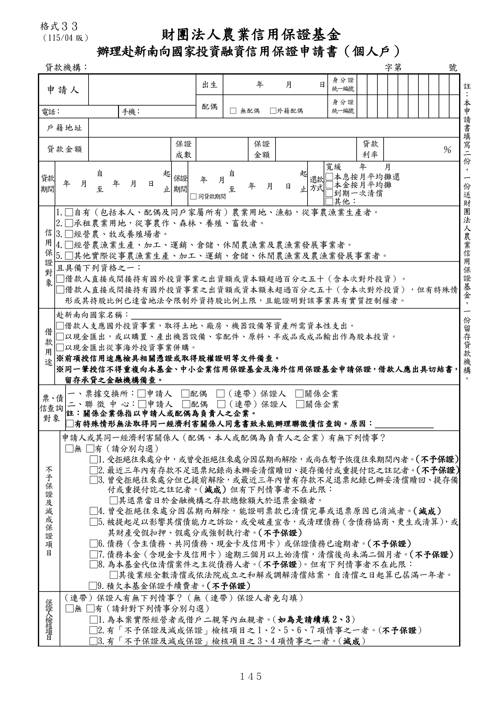
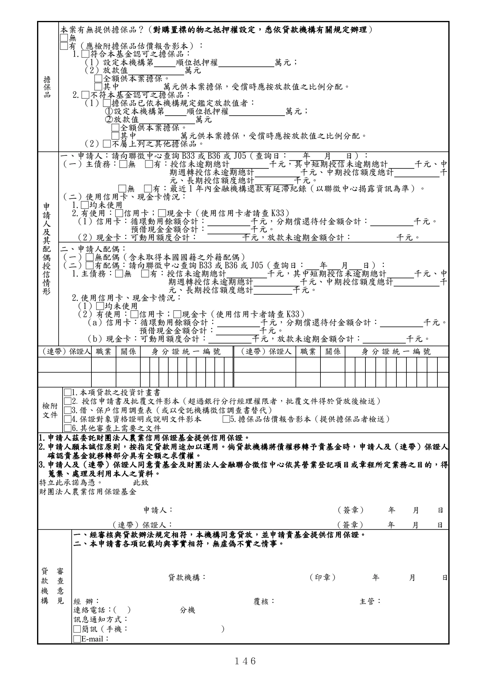

格式 33：辦理赴新南向國家投資融資信用保證申請書（個人戶）
正式書表版面請以原始PDF為準
下列擷取文字僅供搜尋與輔助查閱，未重新設計為線上表單。
手冊頁：145 PDF頁：157／203

查看PDF文字層
下列文字取自PDF既有文字層，僅供搜尋、複製與無障礙輔助。複雜表格的欄列位置可能失真，正式內容請以原頁預覽或PDF為準。
財團法人農業信用保證基金 辦理赴新南向國家投資融資信用保證申請書（個人戶） 貸款機構： 字第 號 申請人 出生 年 月 日 身 分 證 統一編號 配偶 □ 無配偶 □外籍配偶 身 分 證 統一編號 電話： 手機： 戶 籍 地 址 貸 款 金 額 保證 成數 保證 金額 貸款 利率 ％ 貸款 期間 年 月 自 至 年 月 日 起 止 保證 期間 年 月 自 至 年 月 日 起 止 還款 方式 寬緩 年 月 □本息按月平均攤還 □本金按月平均攤 □到期一次清償 □其他： □ 同貸款期間 信 用 保 證 對 象 1.□自有（包括本人、配偶及同戶家屬所有）農業用地、漁船，從事農漁業生產者。 2.□承租農業用地，從事農作、森林、養殖、畜牧者。 3.□經營農、牧或養殖場者。 4.□經營農漁業生產、加工、運銷、倉儲、休閒農漁業及農漁業發展事業者。 5.□其他實際從事農漁業生產、加工、運銷、倉儲、休閒農漁業及農漁業發展事業者。 且具備下列資格之一： □借款人直接或間接持有國外投資事業之出資額或資本額超過百分之五十（含本次對外投資）。 □借款人直接或間接持有國外投資事業之出資額或資本額未超過百分之五十（含本次對外投資），但有特殊情 形或其持股比例已達當地法令限制外資持股比例上限，且能證明對該事業具有實質控制權者。 借 款 用 途 赴新南向國家名稱： □借款人支應國外投資事業，取得土地、廠房、機器設備等資產所需資本性支出。 □以現金匯出，或以購置、產出機器設備、零配件、原料、半成品或成品輸出作為股本投資。 □以現金匯出從事海外投資事業併購。 ※前項授信用途應檢具相關憑證或取得股權證明等文件備查。 ※同一筆授信不得重複向本基金、中小企業信用保證基金及海外信用保證基金申請保證，借款人應出具切結書， 留存承貸之金融機構備查。 票、債 信查詢 對象 一、票據交換所：□申請人 □配偶 □（連帶）保證人 □關係企業 二、聯 徵 中 心：□申請人 □配偶 □（連帶）保證人 □關係企業 註：關係企業係指以申請人或配偶為負責人之企業。 □有特殊情形無法取得同一經濟利害關係人同意書致未能辦理聯徵債信查詢。原因： 不 予 保 證 及 減 成 保 證 項 目 申請人或其同一經濟利害關係人（配偶、本人或配偶為負責人之企業）有無下列情事？ □無 □有（請分別勾選） □1.受拒絕往來處分中，或曾受拒絕往來處分因屆期而解除，或尚在暫予恢復往來期間內者。（不予保證） □2.最近三年內有存款不足退票紀錄尚未辦妥清償贖回、提存備付或重提付訖之註記者。（不予保證） □3.曾受拒絕往來處分但已提前解除，或最近三年內曾有存款不足退票紀錄已辦妥清償贖回、提存備 付或重提付訖之註記者。 （減成）但有下列情事者不在此限： □其退票當日於金融機構之存款總餘額大於退票金額者。 □4.曾受拒絕往來處分因屆期而解除，能證明票款已清償完畢或退票原因已消滅者。（減成） □5.被提起足以影響其償債能力之訴訟，或受破產宣告，或清理債務（含債務協商、更生或清算） ，或 其財產受假扣押、假處分或強制執行者。（不予保證） □6.債務（含主債務、共同債務、現金卡及信用卡）或保證債務已逾期者。（不予保證） □7.債務本金（含現金卡及信用卡）逾期三個月以上始清償，清償後尚未滿二個月者。（不予保證） □8.為本基金代位清償案件之主從債務人者。（不予保證） 。但有下列情事者不在此限： □其後業經全數清償或依法院成立之和解或調解清償結案，自清償之日起算已屆滿一年者。 □9.積欠本基金保證手續費者。（不予保證） 保證人檢核項目 （連帶）保證人有無下列情事？（無（連帶）保證人者免勾填） □無 □有（請針對下列情事分別勾選） □1.為本案實際經營者或借戶二親等內血親者。（如為是請續填2、3） □2.有「不予保證及減成保證」檢核項目之1、2、5、6、7項情事之一者。（不予保證） □3.有「不予保證及減成保證」檢核項目之3、4項情事之一者。（減成） 註 ： 本 申 請 書 填 寫 二 份 ， 一 份 送 財 團 法 人 農 業 信 用 保 證 基 金 ， 一 份 留 存 貸 款 機 構 。 格式３３ （115/04 版）
手冊頁：146 PDF頁：158／203

查看PDF文字層
下列文字取自PDF既有文字層，僅供搜尋、複製與無障礙輔助。複雜表格的欄列位置可能失真，正式內容請以原頁預覽或PDF為準。
擔
保
品
本案有無提供擔保品？（對購置標的物之抵押權設定，悉依貸款機構有關規定辦理）
□無
□有（應檢附擔保品估價報告影本）：
1.□符合本基金認可之擔保品：
（1）設定本機構第 順位抵押權 萬元；
（2）放款值 萬元
□全額供本案擔保。
□其中 萬元供本案擔保，受償時應按放款值之比例分配。
2.□不符本基金認可之擔保品：
（1）□擔保品已依本機構規定鑑定放款值者：
○1 設定本機構第 順位抵押權 萬元；
○2 放款值 萬元
□全額供本案擔保。
□其中 萬元供本案擔保，受償時應按放款值之比例分配。
（2）□不屬上列之其他擔保品。
申
請
人
及
其
配
偶
授
信
情
形
一、申請人：請向聯徵中心查詢B33或B36或J05（查詢日： 年 月 日）：
（一）主債務：□無 □有：授信未逾期總計 千元，其中短期授信未逾期總計 千元、中
期週轉授信未逾期總計 千元、中期授信額度總計 千
元、長期授信額度總計 千元。
□無 □有：最近1年內金融機構還款有延滯紀錄（以聯徵中心揭露資訊為準）。
（二）使用信用卡、現金卡情況：
1.□均未使用
2.有使用：□信用卡；□現金卡（使用信用卡者請查K33）
（1）信用卡：循環動用餘額合計： 千元，分期償還待付金額合計： 千元。
預借現金金額合計： 千元。
（2）現金卡：可動用額度合計： 千元，放款未逾期金額合計： 千元。
二、申請人配偶：
（一）□無配偶（含未取得本國國籍之外籍配偶）
（二）□有配偶：請向聯徵中心查詢B33或B36或J05（查詢日： 年 月 日）：
1.主債務：□無 □有：授信未逾期總計 千元，其中短期授信未逾期總計 千元、中
期週轉授信未逾期總計 千元、中期授信額度總計 千
元、長期授信額度總計 千元。
2.使用信用卡、現金卡情況：
（1）□均未使用
（2）有使用：□信用卡；□現金卡（使用信用卡者請查K33）
（a）信用卡：循環動用餘額合計： 千元，分期償還待付金額合計： 千元。
預借現金金額合計： 千元。
（b）現金卡：可動用額度合計： 千元，放款未逾期金額合計： 千元。
（連帶）保證人 職業 關係 身分證統一編號 （連帶）保證人 職業 關係 身分證統一編號
檢附
文件
□1.本項貸款之投資計畫書
□2. 授信申請書及批覆文件影本（超過銀行分行經理權限者，批覆文件得於貸放後檢送）
□3.借、保戶信用調查表（或以受託機構徵信調查書替代）
□4.保證對象資格證明或說明文件影本 □5.擔保品估價報告影本（提供擔保品者檢送）
□6.其他審查上需要之文件
1.申請人茲委託財團法人農業信用保證基金提供信用保證。
2.申請人願本誠信原則，按指定貸款用途加以運用。倘貸款機構將債權移轉予貴基金時，申請人及（連帶）保證人
確認貴基金就移轉部分具有全額之求償權。
3.申請人及（連帶）保證人同意貴基金及財團法人金融聯合徵信中心依其營業登記項目或章程所定業務之目的，得
蒐集、處理及利用本人之資料。
特立此承諾為憑。 此致
財團法人農業信用保證基金
申請人： （簽章） 年 月 日
（連帶）保證人： （簽章） 年 月 日
審
查
意
見
貸
款
機
構
一、經審核與貸款辦法規定相符，本機構同意貸放，並申請貴基金提供信用保證。
二、本申請書各項記載均與事實相符，無虛偽不實之情事。
貸款機構： （印章） 年 月 日
經 辦： 覆核： 主管：
連絡電話： （ ） 分機
訊息通知方式：
□簡訊（手機： ）
□E-mail：